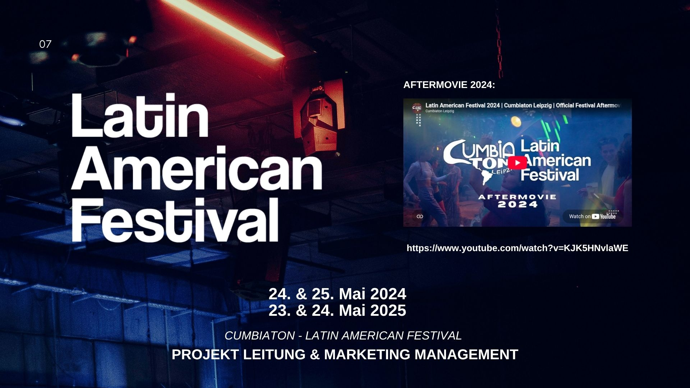
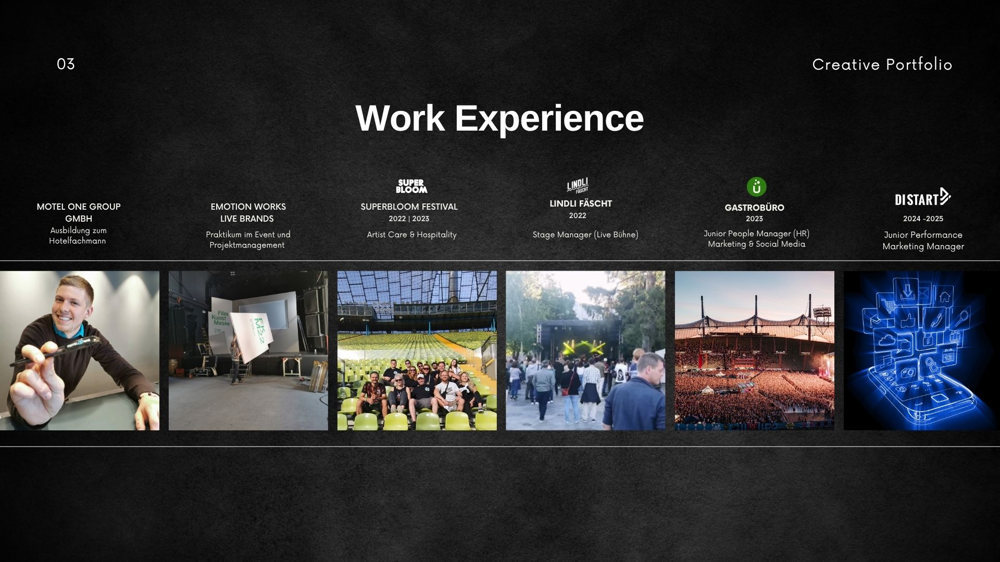
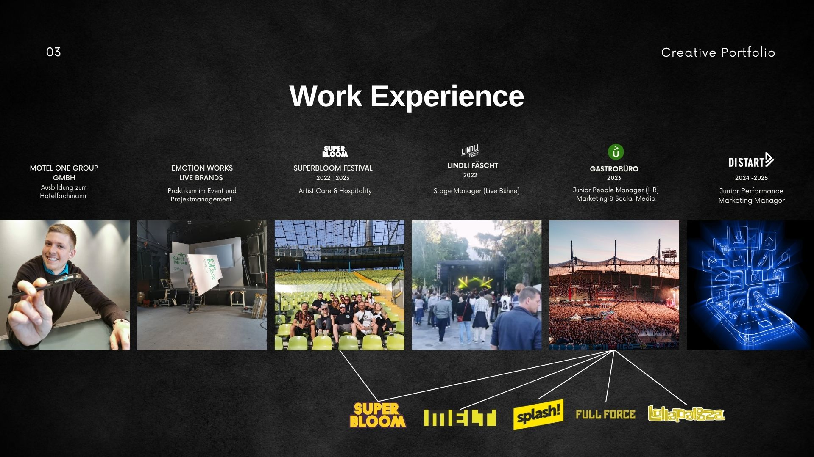
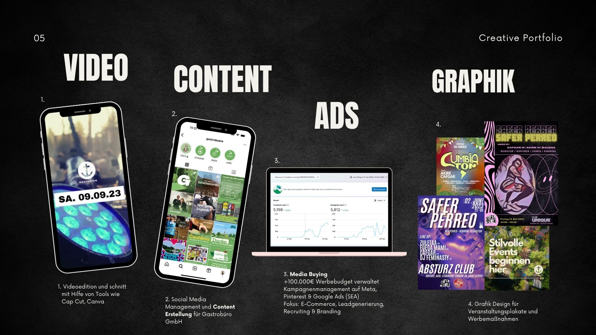
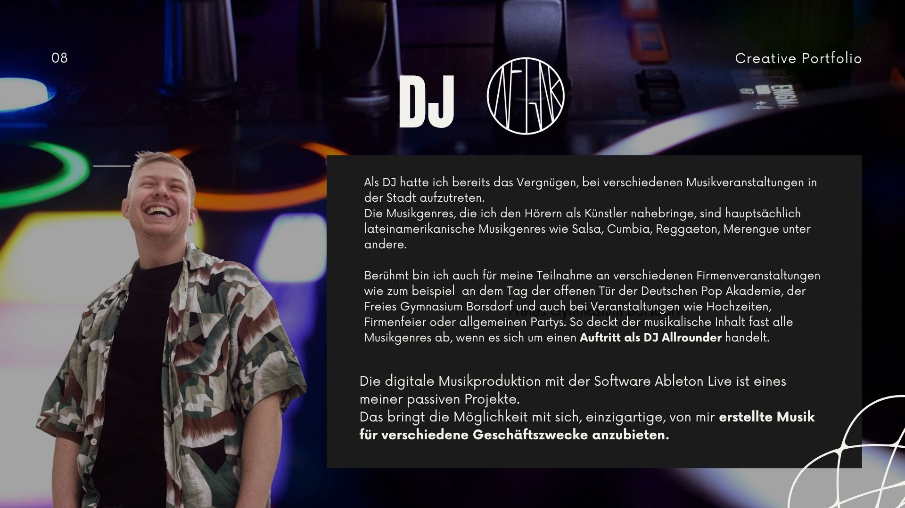

Ich entwickle und realisiere Veranstaltungen und Marketingprojekte von der Idee bis zur Umsetzung und verbinde dabei Kreativität, Struktur und messbare Wirkung.
Mit interkulturellem Hintergrund und einem offenen Blick für neue Ideen beschäftige ich mich gern mit der Konzeption und Durchführung von Events und Marketingstrategien.
Mit Affinität für Kommunikation, Musik, Erlebnisse und Design habe ich durch zahlreiche Projekte gelernt, wie wichtig die Liebe zum Detail und ein strukturierter Ablauf für den Erfolg eines Projekts sind.
Ich verbinde kreative Denkweise mit einem professionellen Anspruch an Planung, Kommunikation und Umsetzung – immer mit dem Ziel, besondere Erlebnisse und Ergebnisse zu schaffen, die in Erinnerung bleiben.
500k+€ Werbebudget verwaltet
40k+€ Media Budget in einzelnen Monaten
50+Events & Kulturprojekte
1.200Gäste beim Latin American Festival
Ausgewählte Projekte
Von Community bis Conversion.
Meine Arbeit bewegt sich zwischen realen Veranstaltungen, Kulturprojekten, visueller Kommunikation und datengetriebenem Marketing.

01
Projektleitung & Marketing Management
Latin American Festival
Konzeption und Steuerung des Festivals, operative und kreative Projektleitung sowie Gestaltung und Koordination des visuellen Auftritts. Dazu kommen Marketing, Artist- und Partnerkommunikation sowie die Produktions- und Ablaufkoordination.
„Safer Perreo“ zählt zweifellos zu meinen Lieblingsprojekten in Leipzig. Das Vorhaben konzentriert sich auf Musikveranstaltungen mit einem speziellen Fokus auf unabhängige Künstler:innen und Musiker:innen aus der lateinamerikanischen Szene in ganz Deutschland.
Bislang wurden Veranstaltungen an verschiedenen Orten in Leipzig durchgeführt, darunter das GRASSI MUSEUM Leipzig, der Absturz Club und der Club Unique. Von der Konzeption bis zur Durchführung engagiere ich mich intensiv für das Projekt.
Performance Marketing Management
Performance trifft Live Entertainment.
Strategie, Paid Social, Tracking und Creative Testing für Veranstaltungen, Leadgenerierung und E-Commerce.
Mein Fokus liegt auf Zielgruppenanalyse, Kampagnenstruktur, Funnel-Aufbau, A/B-Tests, Custom Audiences, Retargeting, Tracking und Reporting. Dabei verbinde ich die Performance-Perspektive mit meinem Verständnis für Events und Kommunikation.
Auswahl Kampagnenarbeit
Paid Media in der Praxis.
Die folgenden Motive zeigen öffentlich sichtbare Kampagnen aus Agentur- und Projektkontexten.
Recherche und Auswahl passender Creator:innen für Festival- und Eventpromotion sowie Koordination von UGC-Kooperationen, unter anderem für die authentische Ansprache der lateinamerikanischen Community.
LATAM & Community
Interkulturelle Kommunikation innerhalb der lateinamerikanischen Community sowie Zusammenarbeit mit Artists, Gastronomiepartnern und Kulturprojekten aus verschiedenen Ländern Lateinamerikas.
Kooperationen & Sponsoring
Aufbau und Betreuung lokaler Kooperationen und Sponsorings mit Kulturprojekten, Gastronomie, Cafés und Hotels – im Eventkontext unter anderem mit Marriott und Best Western.
Beruflicher Weg
Digital gelernt. Live verstanden.
Performance Marketing Manager · adsbe GmbH
Projektmanagement, Entwicklung und Umsetzung von Marketingkonzepten und Strategien für Live Events, Paid Social, Analyse und direkte Kundenkommunikation.
Eventmanagement · selbstständig
Konzeption, Vermarktung und Produktion eigener Eventformate sowie Booking, Partnerkommunikation, Location- und Produktionsmanagement.
Performance Marketing Manager · Distart GmbH
Steuerung und Optimierung von Social-Ads- und SEA-Kampagnen für Leadgenerierung und E-Commerce sowie Media-Buying-Beratung.
Junior People Manager · Gastrobüro / Goodlive
Personal- und Projektmanagement für Melt, Splash! und Full Force sowie Social Media, Kommunikation und Personalmarketing.
Stage Management · Artist Care · Eventmanagement
Erfahrung bei Lindli Fäscht, Superbloom und Emotion Works in Live-Produktion, Artist Care, B2B-Events und Kundenkommunikation.
Ausbildung zum Hotelfachmann · Motel One
Service, Front Office, Reservierung sowie Veranstaltungsbetreuung.


Video · Content · Grafik
Hands-on gehört dazu.

Content & Design
Videoedition und Schnitt mit CapCut und Canva, Social Media Management, Content-Erstellung sowie Grafikdesign für Veranstaltungsplakate und Werbemaßnahmen.

DJ · Cafgar
Als DJ spiele ich hauptsächlich lateinamerikanische Musikgenres wie Salsa, Cumbia, Reggaeton und Merengue – bei Kulturveranstaltungen, Clubnächten und privaten Events.
Portfolio Archiv
Die ursprüngliche Präsentation.
Alle Seiten des bisherigen Portfolios bleiben als visueller Einblick erhalten.